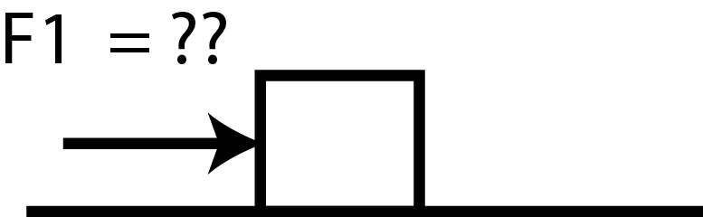

Walkthrough Problem Part C [Solution]
A block of mass 2 kg is initially at rest on a flat surface. It has a coefficient of static friction of 0.34 and a coefficient of kinetic friction of 0.25. How much force, F1, is required to get the block moving towards the right?

To answer this question, we will solve this in parts.

c) In order to move the block towards the right, the applied force (F1) must overcome the maximum static friction between the block and the flat surface. In other words, the applied force must be greater than the static friction and act in the opposite direction to friction. Therefore, let’s calculate the force of static friction. Once we calculate this value, we know the applied force must be greater than this number in order to move the block. The expression for the force of static friction is: INSERT EXPRESSION PICTURE
The problem statement gives us the static friction coefficient, μstatic. Therefore, to find the force of friction, we need to solve for the normal force (FN). Calculate the magnitude of the normal force
FN = ?
Answer: C
Given that the block is experiencing no vertical acceleration, the normal force must be equal in magnitude to the force of gravity. Thus, calculating the weight of the block using the expression Fg = mg, where m is the mass of the block and the constant g = 9.8 m/s2, we determine the weight of the block to be 2 kg x 9.8 m/s2 = 19.6 N.